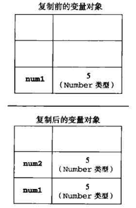
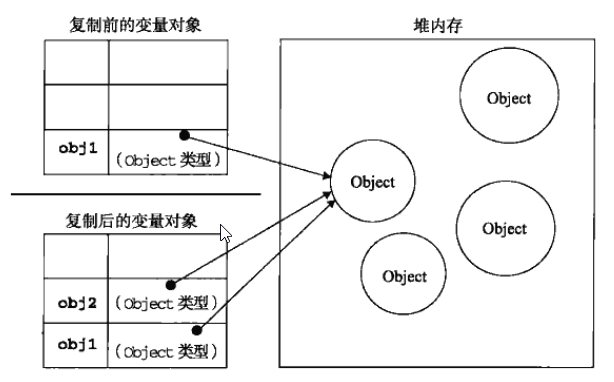

JavaScript高级程序设计-6-变量、作用域和内存问题
按ECMA-262的定义，js的变量与其他语言有很大区别，js变量本质是松散类型，决定了它仅仅只是在特定的时间用于保存特定值的一个名字而已。由于这种灵活性，js变量很容易引发一些问题，同时能变得非常复杂。
基本类型和引用类型的值
ES变量可能包含两种不同类型的值：基本类型和引用类型。基本类型值指的是简单的数据段，而引用类型值指的是那些可能由多个值构成的对象。
在将一个值赋给变量时，解析器必须确定这个值是基本类型还是引用类型，5种基本类型是按值访问的，因为可以操作保持在变量中的实际的值。
引用类型的值是保存在内存中的对象，与其他语言不同，js不允许直接访问内存中的位置，也就是说不能直接操作对象的内存空间，在操作对象时，实际上是在操作对象的引用而不是实际的对象，所以，引用类型的值是按引用访问的。
注：其他语言中字符串是以对象的形式访问的，是引用类型的，但ES不是。
动态的属性
定义基本类型和引用类型的方法是类似的，创建一个变量并为变量赋值即可。但保存到变量中后，不同类型的值可执行的操作却大不一样。对应引用类型的值，可以为其添加属性和方法，也可以改变和删除其上的属性和方法。
只能给引用类型的值动态添加属性，对基本类型的值添加属性和方法虽然不会报错，但是不会有任何效果。1
2
3var name = "king";
name.age = 25;
console.log(name.age); // undefined
复制变量值
对于基本类型来说，将一个变量复制给另一个变量其实是在变量对象上创建一个新值，然后将该值复制到为新办理分配的位置上。两个变量都独立。1
2var num1 = 5;
var num2 = num1; // num2也等5，但num1和num2是彼此独立的。

但引用类型的复制则不同，复制操作结束后，两个变量实际上引用同一个对象，因此改变其在一个变量，会影响另一个变量。1
2
3
4var obj1 = new Object();
var obj2 = obj1;
obj1.name = 'king';
console.log(obj2.name); // king

传递参数
ES中所有函数的参数都是按值传递的。也就是说，把函数外部的值复制给函数内部的参数，就和把值从一个变量复制到另一个变量一样。基本类型的传递同基本类型变量的复制一样，而引用类型值的传递则同引用类型变量的复制一样。
当向参数传递基本类型的值时，被传递的值会背复制给一个局部变量（即命名参数，其实就是arguments对象的一个元素）。当向参数传递引用类型的值时，会把这个值在内存中的地址复制给一个局部变量，因此，这个局部变量的变化会反映在函数的外部。1
2
3
4
5
6function setName(obj){
obj.name = "king";
}
var person = new Object();
setName(person);
console.log(person.name); // "king"
上例中，在函数调用时，person对象被传递到setName函数中后就背复制给了obj，因为在函数内部obj和person引用的是同一个对象。即使这个对象是俺值传递的，obj也会按引用来访问同一个对象，所以在函数内部obj添加name属性会影响到函数外部的person对象。究其原因是因为person指向的对象在堆内存中只有一个，而且是全局对象。与下例做对比，更能体现函数参数是俺值传递的。1
2
3
4
5
6
7
8function setName(obj){
obj.name = "king";
obj = new Object();
obj.name = "new value";
}
var person = new Object();
setName(person);
console.log(person.name); // "king"
这个例子唯一的不同就是在setName多做了两个事儿，重新定义obj对象，同时为这个obj对象定义了一个带有不同值的name属性。在把person传递给setName后，其name属性被设置为king（因为此时obj和person指向同一个内存地址）。然后又将一个新对象赋值给obj，最后将这个其name属性改为new value。
若函数参数是按引用传递，则外部的person.name将会被更新为new value。而事实上却仍然是king，因为obj的引用在被修改为一个本地对象后，原person对象的引用就被obj丢弃了，所以原引用的修改就保持不变。这说明即使函数内部修改了参数的值，原始引用依然不变，实际上，当在函数内部重写obj时，obj变量引用的就是一个局部对象了，这个局部对象在函数执行完毕后就立即被销毁了。
检测类型
要检测一个变量的类型是不是属于基本类型可以用typeof操作符，但当被检测变量是引用类型时，typeof仅仅只会返回object，但其实需要的不仅仅是“其是否为对象”，而是想知道其“具体是什么类型”的对象，为此，ES提供了instanceof操作符。
instanceof操作符判断给定引用类型是否为某个构造函数的实例，用法为result = variable instanceof constructor，result是一个布尔值。
执行环境及作用域
执行环境（execution context），也被称为“上下文”或“环境”，是js中最为重要的一个概念，执行环境定义了变量或函数有权访问的其他数据，决定了他们各自的行为。每个执行环境都有一个与之关联的变量对象（variable object）,环境中定义的所有变量和函数都保存在这个对象中，程序员编写的代码无法访问这个对象，是供解析器在处理数据时使用的。
全局执行环境是最外围的一个执行环境，根据ES实现所在的宿主环境不同，表示执行环境的对象也不一样，在Web浏览器中，全局执行环境被认为是window对象，因此所有全局变量和函数都作为window对象的属性和方法创建的。某个执行环境中的所有代码执行完毕后，该环境被销毁，保存在其中的所有变量和函数定义也随之销毁（全局执行环境直到应用程序退出，比如：关闭网页或浏览器，时才退出）。
每个函数都有自己的执行环境，当执行流进入一个函数时，函数的环境就会被推入一个环境栈中，而在函数执行之后，栈将其环境弹出，将控制权返回给之前的执行环境，ES中的执行流就是由这种栈机制控制的。
当代码在一个环境中执行时，会创建变量对象的一个作用域链（scope chain），作用域链的用途是保证对执行环境有权访问的所有变量和函数的有序访问。作用域链的前端，始终都是当前执行的代码所在环境的变量对象。若这个环境是函数，则将其活动对象（activation object）作为变量对象，活动对象在最开始时只包含一个变量，即arguments对象（这个对象在全局环境中是不存在的）。作用域链中的下一个变量对象来自包含（外部）环境，而在下一个变量对象来自下一个包含环境，这样一直延续到全局执行环境，全局执行环境的变量对象始终都是作用域链中的最后一个对象。
标识符解析是沿着作用域链一级一级的搜索标识符的过程，搜索过程始终从作用域链的前端开始，然后逐级的向后回溯，直到找到标识符为止，若找不到则可能报错或返回undefined。
1 | var color = 'blue'; |
上例中，函数changeColor的作用域链包含两个对象：它自己的变量对象（其中定义了arguments对象）和全局环境的变量对象。
延长作用域链
虽然执行环境的类型只有两种：全局和局部（函数），但有一些语句可以在作用域链的前端临时添加一个变量对象，这些临时变量对象会在代码执行后被移除，即除了函数之外，还有语句能够创建一个独立的作用域。分别是with语句和try-catch的catch块。
对with来说，将指定的对象添加到作用域链中。对catch块来说，则是创建一个新的变量对象，其内包含的是被抛出的错误对象的声明。
没有块级作用域
由于js没有块级作用域，所以在条件语句中定义的变量将能被条件语句外访问，包括for循环初始化语句中定义的变量。
声明变量
使用var声明的变量将会被自动添加到最接近的环境中，在函数内部，则这个环境就是函数的局部环境。所以这也是为什么不使用var声明变量时，变量会被自动添加到全局环境。
查询标识符
由于作用域链，查询标识符（变量名或属性名）时将沿着作用域链依次回溯，直到找到，则立即返回。所以当在局部环境中定义的局部变量覆盖了全局变量后，想要访问全局变量则需要用window.name，或者访问预先保存的父级作用域对象。
垃圾回收
js具有自动垃圾回收机制，执行环境负责管理代码执行过程中的内存使用，开发者无需关心内存问题。自动垃圾回收机制的原理很简单：找出不需要继续使用的变量，然后释放其占用的内存。因此，垃圾回收器会按照固定的时间间隔（或代码执行中预定的时间点）周期性的执行操作。
在js中函数局部变量只在函数执行的过程中存在，它的正常生命周期为：函数为局部变量在堆（或栈）内存上分配相应的空间，以便存储它们的值，然后在函数中使用这些变量，直至函数执行结束。此时，局部变量就没有存在的必要了，因此可以释放它们的内存以供将来使用，在这种情况下，很容易判断变量是否需要继续存在，但并非所有情况下都是这么容易判断。垃圾回收器必须跟踪变量的使用，标记不再使用的变量以便将来回收。而标识无用变量的策略因实现而异，通常有两种策略：标记清除和引用计数。
标记清除
js中最常用的垃圾回收策略是标记清除（mark-and-sweep）。当变量进入环境（如函数中声明一个变量）时，就将这个变量标记为“进入环境”，从逻辑上讲，永远不能释放进入环境的变量所占用的内存，因为只要执行流进入相应环境，变量就可能会用到。而当变量离开环境后，将其标记为“离开环境”。
可以使用任何方式来标记变量，比如，通过某个特殊的位来记录一个变量合适进入环境或使用“进入环境”/“离开环境”的变量列表来跟踪变量变化，说到底，关键是采取什么策略，而如何标记变量不重要。
垃圾回收器在运行的时候会给存储在内存中的所有变量都加上标记，然后去掉环境中的变量以及被环境中的变量引用的变量的标记。在此之后在加上标记的变量将被视为准备删除的变量，原因是环境中的变量已经无法访问这些变量了。最后垃圾回收器完成内存清理工作，销毁那些带有标记的值并收回其所占的内存。
引用计数
另一个不太常见的是引用计数（reference counting），引用计数的含义是跟踪记录每个值被引用的次数。当声明了一个变量并将一个引用类型值赋给该变量时，则这个值的引用次数就是1，若同一个值又被赋给另一个变量，则引用次数加1，当包含这个值引用的变量不再引用这个值时，引用次数减1。当值的引用次数变成0时，则说明没有办法再访问这个值了，因而就可以将其占用内存回收。因此，当下次再执行垃圾回收时，垃圾回收器负责释放引用次数为0的值所占用的内存。
引用计数有一个问题，那就是循环引用，循环引用是指对象A包含一个指向对象B的引用，而对象B又包含一个执行对象A的引用。即通过各自的属性相互引用，这两个值的引用次数至少为2。
采用标记清除的策略中，由于函数执行后这两个对象都离开了作用域，因此不会出现相互引用问题。但在采用引用计数的策略中，即使函数执行完毕，循环引用的变量将继续存在，因为它们的引用次数永不为0，加入这个函数被重复多次调用，就会导致大量内存的占用。
注：IE9之前采用标记清除的策略，但其BOM和DOM中的对象是C++以COM(Component Object Model 组件对象模型)对象的形式而实现的，COM对象的垃圾回收机制是引用计数，因此当在IE中设计COM对象、就有可能存在循环引用的问题。
下例就是一个DOM元素（ele）与一个原生js对象（obj）之间的循环引用问题：1
2
3
4var ele = document.getElementById('some_element');
var obj = new Object();
obj.someEle = ele;
ele.someObj = obj;
为了避免上述的循环引用问题，最好是不使用它们的时候手动断开原生js对象与DOM元素之间的连接：1
2obj.someEle = null;
ele.someObj = null;
将变量设为null意味着切断变量和它之前引用的值之间的连接，当下次执行垃圾回收时就会被释放掉。
性能问题
垃圾回收是周期性执行的，而若为变量分配的内存很大，那么回收时的工作量也非常大。具体来说就是垃圾回收的执行间隔是一个非常重要的问题。
所以最好的方式是动态的调整垃圾回收的时间间隔，主要为调整变量分配、字面量、数组元素的临界值。
注：书中讲的不是很清晰，而且有些古老脱节了
管理内存
js在进行内存管理的一个最重要的问题就是：分配给Web浏览器的内存数量通常比给应用程序的少，目的是出于安全考虑，防止js运行的网页耗尽系统的内存而导致系统崩溃。内存的限制不仅影响给变量的内存分配，而且影响调用栈以及线程同时执行的语句的数量。
因此，尽量优化内存占用确保有较好的性能。而占用少内存的最佳方式：仅为执行中的代码保存必要的数据，一旦数据不再使用，通过将其值设置为null来释放其引用，即解除引用（dereferencing），它适用于大部分的全局变量和全局对象的属性，局部变量会在它们离开执行环境时自动被解除引用。1
2
3
4
5
6
7
8
9function person(name){
var localPerson = new Object();
localPerson.name = name;
return localPerson;
}
var globalPerson = person('king');
// ...
globalPerson = null; // 解除全局变量的引用
上例中，变量globalPerson取得了person函数返回的值，在person函数中，局部变量localPerson有一个name属性，最后localPerson以函数值的形式返回并赋给全局变量globalPerson。由于localPerson在person函数执行完毕后就离开了其执行环境，因此无需显示为它解除引用，但对全局变量globalPerson，则需要手动解除。
解除引用并不意味垃圾回收器将立即释放该值所占用的内存，而是让值脱离执行环境，以便垃圾回收器下次执行时将其释放。
小结
js变量可以用来保存两种类型的值：基本类型值和引用类型值。基本类型的值有5种：Undefined、Null、Boolean、Number、String。总结其特性如下：
- 基本类型在内存中占据固定大小的空间，因此被保存在栈内存中
- 从一个变量向另一个变量复制基本类型的值，会创建这个值的一个副本
- 引用类型的值是对象，保存在堆内存中
- 包含引用类型值的变量实际包含的不是对象本身，而是指向该值对象的指针
- 从一个变量向另一个变量复制引用类型的值，复制的其实是指针，因此两个变量最终都指向同一个对象。
- 确定一个值是那种基本类型可以使用typeof操作符，而确定一个值是那种引用类型可以使用instanceof操作符
所有的变量（包括引用类型和基本类型）都存在于一个执行环境中（作用域/上下文），这个执行环境决定了变量的生命周期，以及那一部分代码可以访问其中的变量。关于执行环境总结特性如下：
- 执行环境有全局执行环境（全局环境）和函数执行环境之分
- 每次进入一个新的执行环境，都会创建一个用于搜索变量和函数的作用域链
- 函数的局部环境不仅有权访问作用域中的变量，而且有权访问其父（祖先）环境，乃至全局环境
- 全局环境只能访问在全局环境中定义的变量和函数，而不能直接访问年局部环境中的任何数据
- 变量的执行环境有助于确定应该在合适释放内存
关于js的自动垃圾回收机制总结如下：
- 离开作用域的值将被自动标记为可以回收，因此将在垃圾回收期间被释放
- “标记清除”是主流的垃圾回收算法，这种算法的思想是当前不使用的值加上标记，然后再回收其内存
- 另一个垃圾回收算法是“引用计数”，思想是跟踪所有值被引用的次数，js引擎一般不是此算法。
- 当代码中存在循环引用时，引用计数会导致问题
- 解除变量的引用不仅有主语消除循环引用现象，而且有利于垃圾回收，为了确保有效回收内存，应该及时解除不再使用的全局对象，全局对象属性以及循环引用变量的引用。